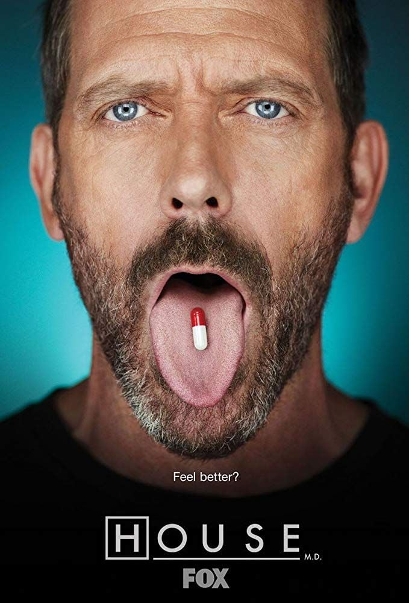
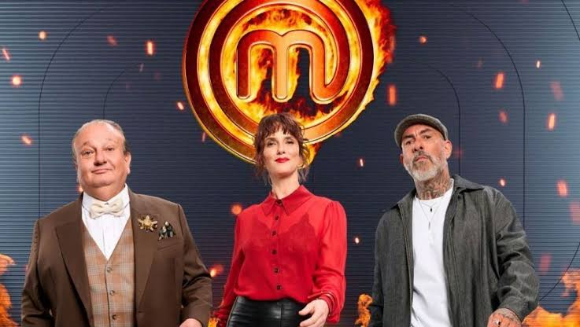
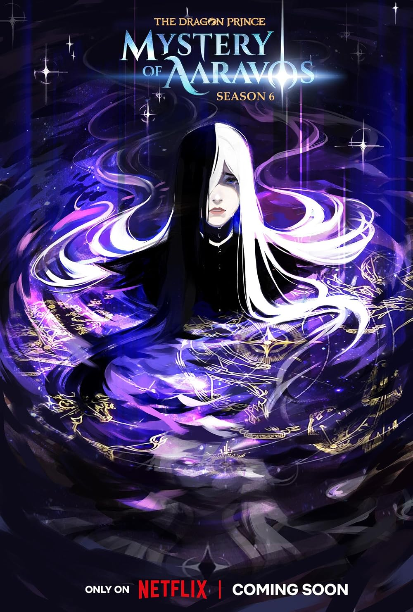
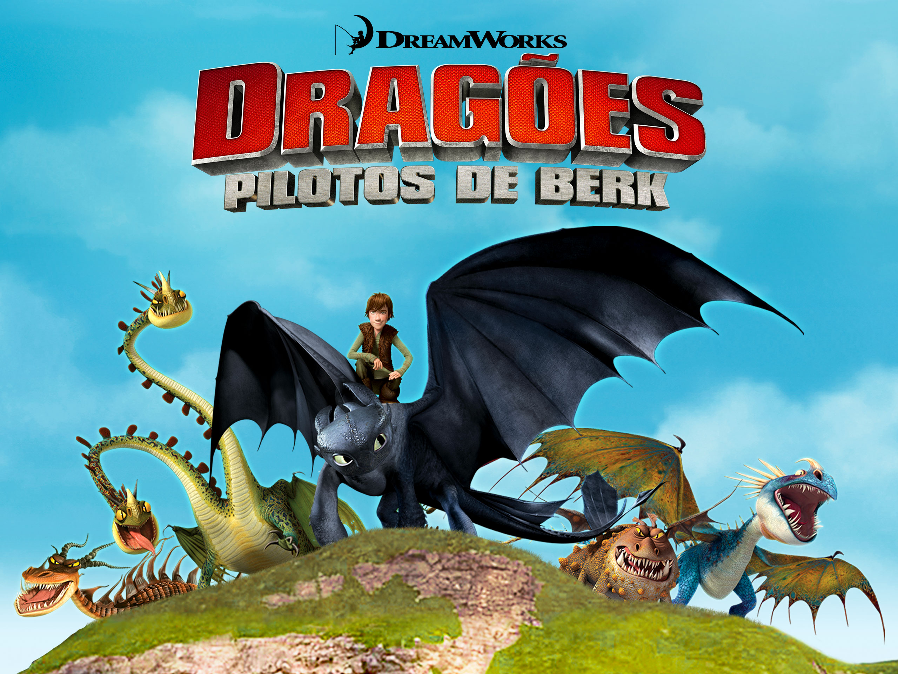
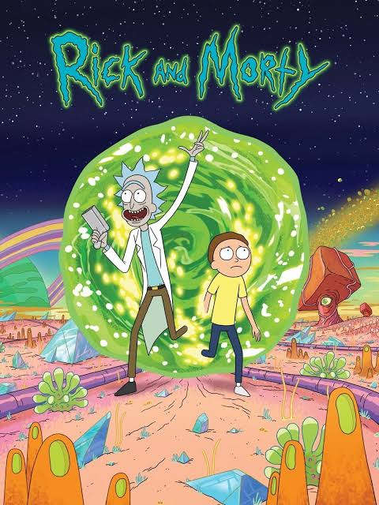

Dr. House
O Dr. House acompanha a história do Dr. Gregory House, um médico brilhante, irônico e antissocial que lidera uma equipe de diagnósticos no fictício hospital Princeton-Plainsboro, nos Estados Unidos

O MasterChef Brasil é um reality show culinário de competição em que cozinheiros amadores ou profissionais enfrentam desafios gastronômicos intensos, provas de eliminação, testes de pressão e criatividade sob o olhar rigoroso de um júri de chefs renomados para conquistar o troféu e o prêmio principal

Os irmãos e príncipes humanos Callum e Ezran unem-se a Rayla, uma elfa assassina, em uma jornada épica para devolver um ovo de dragão e trazer paz aos seus reinos em guerra

A série Dragões: Pilotos de Berk mostra os eventos logo após o primeiro filme, com os vikings e dragões fazendo as pazes e convivendo na mesma aldeia

Rick and Morty é uma animação de comédia e ficção científica para o público adulto que acompanha as perigosas e surreais viagens pelo multiverso do cientista alcoólatra e genial Rick Sanchez e seu neto adolescente, Morty